В таёжном лесу по сравнению с лесотундрой условия для жизни животных благоприятнее. Здесь больше оседлых животных. Нигде в мире, кроме тайги, не водится столько пушных зверей. Сейчас Вы познакомитесь с наиболее широко распространенными животными тайги.
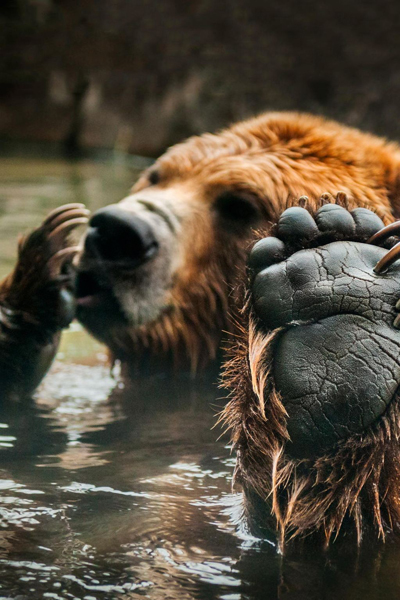
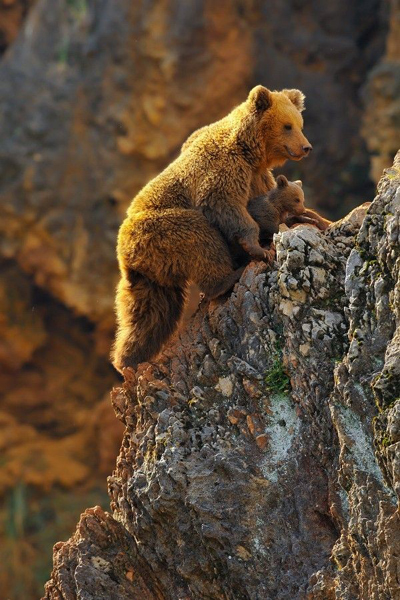
Бурый медведь (лат. Ursus arctos) — хищное млекопитающее семейства медвежьих. Один из самых крупных наземных хищников. Бурый медведь — лесное животное. Границы участка помечаются запаховыми метками и «задирами» — царапинами на приметных деревьях. Иногда совершает сезонные кочёвки. Так в горах бурый медведь, начиная с весны, кормится в долинах, где раньше сходит снег, потом постепенно спускается в лесной пояс, где поспевают ягоды и орехи. Бурый медведь всеядный, но рацион у него на 3/4 растительный: ягоды, жёлуди, орехи, корни, клубни и стебли трав. В его рацион также входят насекомые (муравьи, бабочки), черви, ящерицы, лягушки, грызуны (мыши, сурки, суслики, бурундуки) и рыба. Летом насекомые и их личинки порой составляют до 1/3 рациона медведя. Хотя хищничество не является примерной стратегией бурых медведей, они добывают и копытных — косуль, ланей, лосей, оленей, карибу. Сезонная цикличность жизни ярко выражена. К зиме медведь нагуливает подкожный жир (до 180 кг) и с осени залегает в берлогу. Берлоги располагаются на сухом месте, в большинстве случаев в ямах под защитой бурелома или под вывороченными корнями деревьев. Реже медведи выкапывают убежище в земле или занимают пещеры и расщелины скал. В зависимости от климатических и иных условий медведи находятся в берлогах с октября — ноября до марта — апреля, то есть 5—6 месяцев. Вопреки распространённому мнению, зимний сон у бурого медведя неглубок. В случае опасности животное просыпается и покидает берлогу, отправляясь на поиски новой. Иногда медведь не успевает за осень как следует откормиться, поэтому среди зимы просыпается и начинает бродить в поисках пищи, таких медведей называют шатунами. Шатуны очень опасны, голод делает их беспощадными хищниками — они нападают даже на человека.
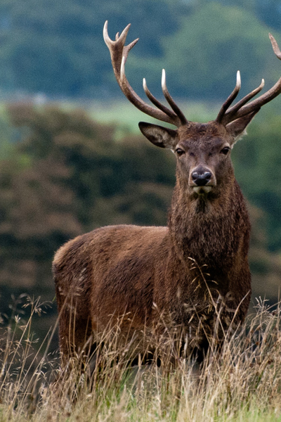
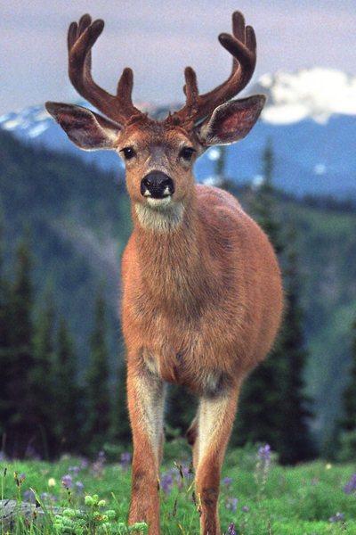
Благородный олень (лат. Cervus elaphus) — парнокопытное млекопитающее из семейства оленевых. Благородный олень объединяет в себе много подвидов, представители которых отличаются друг от друга только размерами, весом, окраской и некоторыми другими признаками. Питается благородный олень самой разнообразной пищей. Основной едой этого животного является травянистая растительность, злаки, бобовые. Благородный олень занимает территорию, по размерам зависящую от того, насколько много корма на ней. Чем больше пищи, тем меньше могут быть размеры участка обитания. Животные метят свои участки, и особи из другого стада уже не пересекают границ, а если и попадают на территорию случайно, то сразу же изгоняются взрослыми особями, которые следят за тем, чтобы территория их обитания была неприкосновенна. На 1000 га может жить и кормиться стадо из 4 оленей, а может и из 30 особей, в зависимости от кормовой возможности участка.
Олени, живущие в горах, ведут кочевой образ жизни, осенью спускаются в более низкие, мало снежные места гор, а с весны до осени поднимаются вверх, где пищи становится достаточно. Как только выпадает первый снег, к местам зимовок направляются самки с детёнышами, немного позже по стопам самок продвигаются самцы. Эти животные отлично плавают, так что преграды в виде рек для них не страшны.
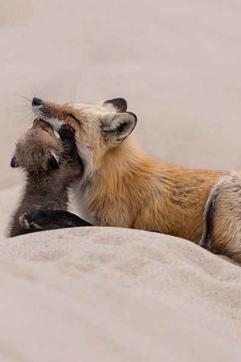
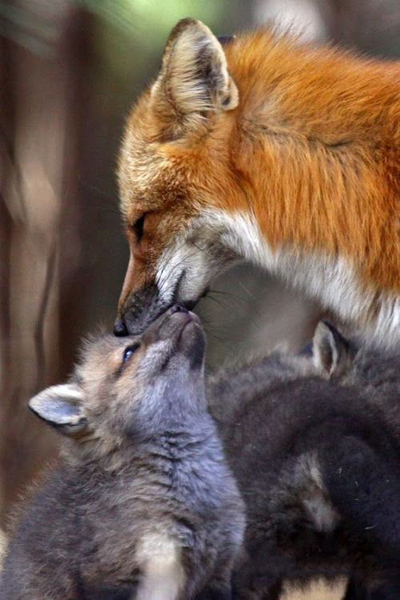
Лисица (лат. Vulpes vulpes) — хищное млекопитающее семейства псовых. Лисица, хотя и принадлежит к типичным хищникам, питается очень разнообразными кормами. Среди пищи, которую она употребляет, выявлено больше 400 видов одних только животных, не считая нескольких десятков видов растений. Индивидуальный участок, который занимает пара или семья лисиц, должен обеспечивать их не только достаточным количеством корма, но и пригодными для устройства нор местами. Лисицы роют их сами, или (что случается часто) занимают пустующие норы барсуков, сурков, песцов и других роющих животных, приспосабливая их к своим нуждам. Как правило, лисицы используют постоянные укрытия лишь в период воспитания детёнышей, а на протяжении остального года, в частности зимой, отдыхают в открытых логовах в снегу или траве. Но, спасаясь от преследования, лисицы в любое время года могут укрыться в какой угодно норе, которая найдётся в местах их обитания. Также во время воспитания потомства звери часто вынуждены несколько раз менять жилье из-за его заражённости паразитами. В дикой природе лисицы редко живут более семи лет, часто продолжительность жизни не превышает трёх. В неволе звери доживают до 20—25 лет.
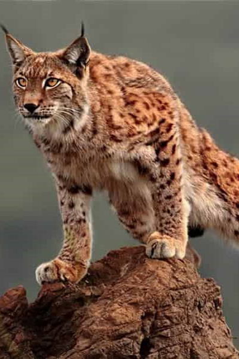
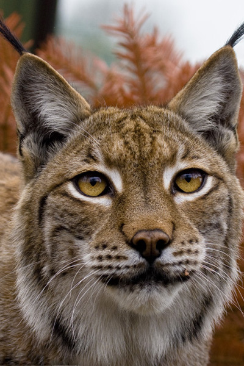
Обыкновенная рысь (лат. Lynx lynx) — вид млекопитающих из рода рысей. При обилии пищи рысь живёт оседло, при недостатке — кочует. В сутки она способна проходить до 30 километров. Основу её рациона составляют зайцы-беляки. Также она постоянно охотится на тетеревиных птиц, мелких грызунов, реже — небольших копытных, вроде косули, кабарги, пятнистого и северного оленей, изредка нападает на домашних кошек и собак, кроме того — на лис, енотовидных собак и других некрупных зверей. Кроме того, рысь нападает на куропаток, рябчиков, бобров, мелких грызунов, молодняк диких кабанов, ланей, лосей. При всей осторожности рысь не очень боится людей. Она живёт в созданных ими вторичных лесах, молодняках, на старых лесосеках и гарях, а в бедственные годы заходит в сёла и даже города. На человека рысь обычно не нападает, но в случае ранения становится опасной, нанося человеку зубами и когтями серьёзные раны. Рыси считаются вредными хищниками, но в природе играют такую же роль, как и волки: они губят среди таежных животных главным образом больных, слабых, неполноценных особей.
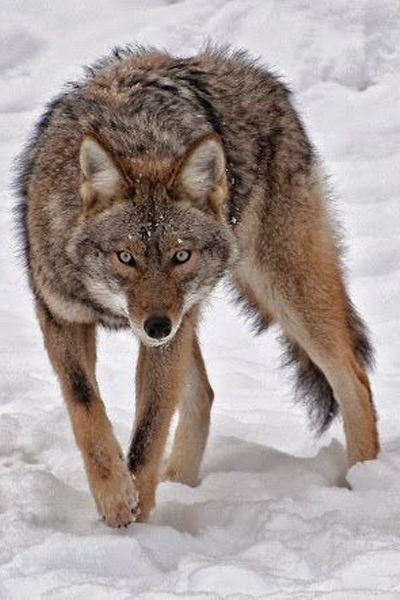
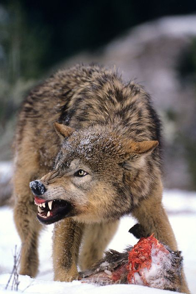
Волк (лат. Canis lupus) — вид хищных млекопитающих из семейства псовых. В качестве одного из ключевых хищников волки играют очень важную роль в балансе экосистем. Волк — достаточно территориальное существо. Размножающиеся пары, а нередко и стаи, живут оседло на определённых участках, границы которых обозначаются пахучими метками. Диаметр участка, занятого стаей зимой, обычно 30—60 километров. Волк — типичный хищник, добывающий пищу активным поиском и преследованием жертв. Активны преимущественно в ночные часы. О своём присутствии волки нередко дают знать громким воем, сильно отличающимся у матёрых самцов, волчиц и молодняка. Вой предназначен для коммуникации волков на большом расстоянии, оповещения, взаимоидентификации, акустической локации друг-друга, заявления территориальных претензий, ухаживания за особями противоположного пола и т. д. Во время охоты волки, как правило, не издают лишних звуков и передвигаются весьма бесшумно, чтобы не спугнуть добычу. Из внешних чувств у волка лучше всего развит слух, немного хуже — обоняние, зрение значительно слабее. Умственно волк высоко развит. Это выражается в умении ориентироваться в обстановке и уходить от опасности, а также в способах охоты. Высоко развито искусство применения стайных коллективных действий. В ходе эволюции у волков сформировался ряд физиологических характеристик, которые позволяют им в поисках пищи путешествовать на дальние расстояния. Этому способствуют узкая обтекаемая грудная клетка, покатая спина и сильные ноги. Расстояние в несколько километров они легко пробегают рысцой со скоростью в 10 км/ч, а во время погони вполне могут достичь скорости и в 65 км/ч, при этом делая прыжки до 5 м. Несмотря на то, что популяция волков продолжает уменьшаться, он до сих пор во многих местах является объектом охоты как представляющий потенциальную опасность для человека и домашнего скота либо ради развлечения.
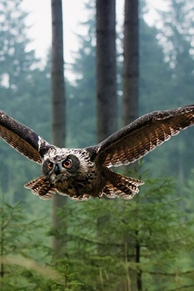
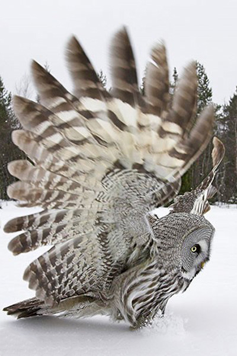
Совообразные (лат. Strigiformes, или Striges) — отряд хищных птиц. По своим анатомическим признакам отличаются от дневных хищных и поэтому выделяются в самостоятельный отряд. Большая часть сов окрашена тускло; обыкновенно по основному серому или ржавчинному фону более или менее густо разбросаны чёрные пятна, полоски и пестринки; но эта окраска сов всегда гармонирует с окружающим фоном и вполне скрывает их в сумерках. Большинство сов — настоящие ночные птицы, и многие из них свободно летают даже в совершенно тёмные ночи, о чём можно судить по их крику. Полёт сов вполне беззвучен и позволяет им совершенно незаметно подлетать к спящим птицам. На охоте совы, проносясь неслышно над землёй, издают время от времени резкий крик, вспугивающий своей неожиданностью добычу. По-видимому, совы этим пользуются, чтобы заметить последнюю. Обычную пищу сов составляют мелкие грызуны; более мелкие виды сов питаются преимущественно крупными насекомыми, а некоторые — рыбой. На птиц совы нападают редко. Гнездами в большинстве случаев служат дупла старых деревьев, причём яйца кладутся обыкновенно без всякой подстилки. Также гнездами могут служить расщелины скал, пещеры, дыры в стенах, подземные норы различных млекопитающих, покинутые гнёзда других птиц. Совы моногамны и образуют постоянные пары. Гнёзд сами не строят. Занимают укромные места, скалистые расщелины, углубления и брошенные крупными птицами гнёзда. Размножаются обычно один раз в году, но при обилии пищи могут размножаться чаще. Яйца сов сравнительно малы, всегда белого цвета и имеют характерную почти шарообразную форму. Обычно сова откладывает от 3 до 10 яиц. Яйца насиживают самки, но в кормлении птенцов принимают участие оба родителя. Насиживание продолжается около месяца. Совы насиживают с первого яйца, поэтому часто в гнезде живут птенцы разного возраста. Родители стараются прокормить старших птенцов, из-за чего те ещё больше обгоняют в развитии младших собратьев. В голодное время старшие могут даже поедать младших птенцов.